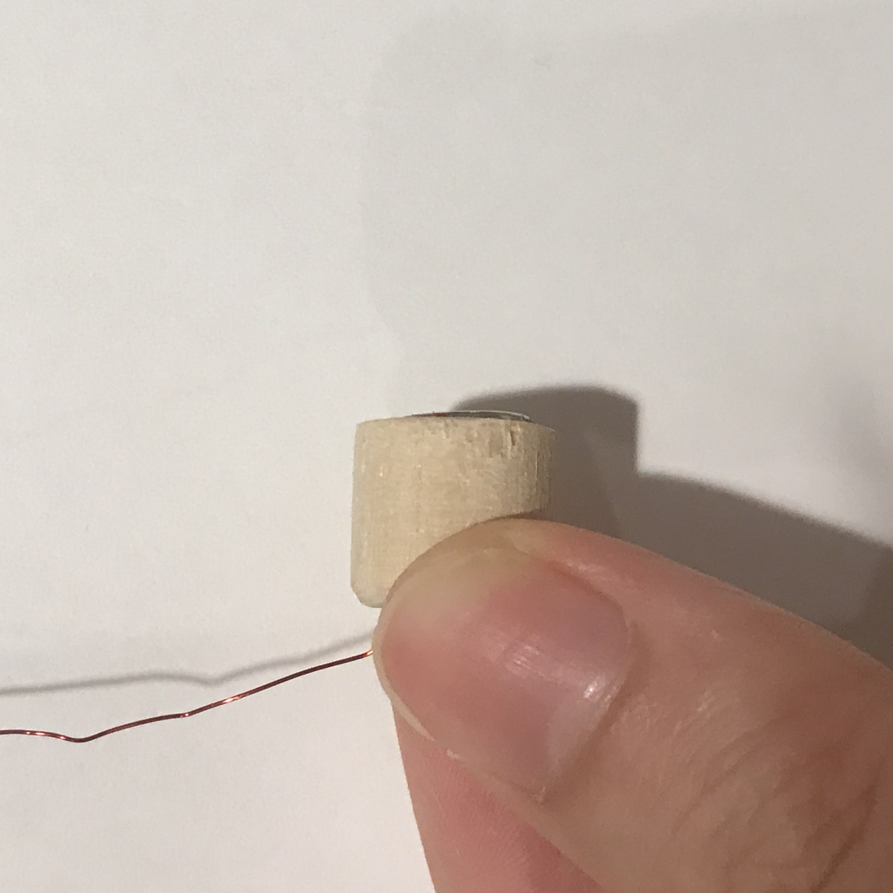
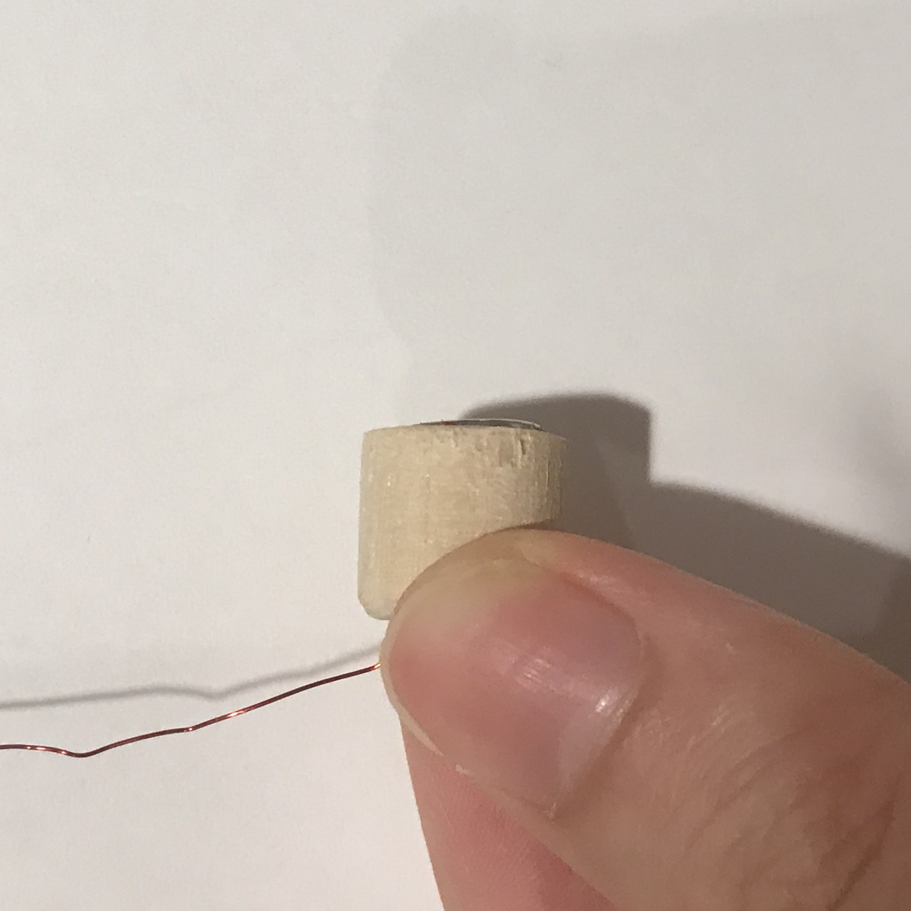

Week 1 - Flashlight
Documentation


Week 2 - Star Fishing (REPEATABILITY)
For this repeatability project, I want to be as zerowaste as possible, so it also means that I want all 5 objects to be useful.
I had two directions:
1. Something for myself
I always wanted a white modern lantern that looked somehow like this:


The materials will probably be rice paper, wire, lighting system (experience from the flashlight assignment) and wood as the base.
However, not only it is time consuming, but also do I really need 5 of them?
So I went into the second direction:
1. Something for my friend's kid
One of my college friend, Nina having this baby, called Arya, has the same birthday as I do. (Not to mention it because it's my birthday, but) It's less than a month to her birthday! I want to make something for this special baby. So I get some inspirations on web and had some sketches:

From here I figured among all, there's one game that all 5 objects can be used, and that is: The Fishing Game!
I am always amazed by the univers and stars, so instead of fishing fish, I want to create a star fishing game! Also reminded me the DreamWorks Logo:
So here is how I make it--
STEP 1 - Construction of the Star Shape
Inspired by Ben's story on the wooden houses, I want to also create a system that can help me to get a star shape easily. So I was thinking to do this triangle system:However, when I was really trying to buy the woods, I figured that 5 is still a fairly low quantaty. If I am really going to do the triangle system, it is actually more cutting that 5 individually cutted stars. So I go for the stupid but simplier way: trace and cut.

STEP 2 - Cutting the Shape
It was not the first time that I had ever done something in the woodshop, but it was the first time in five years. The first star definitly sacrificed due to my out-of-practice hands. And here is my 5 stars before sanding:
The Star No.1 is really the one that's more off from the trace mark than the others, however, I found out is that my No. 5 isn't in the best, instead, No. 4 seems to be the best in shape. I think I also figured something interesting about myself: I get tired when it comes to the last one.
Same for sanding:
STEP 3 - Sanding

STEP 4 - Drilling
Now I have to apply magnet onto my stars. I found this package that came in 5 different sizes (mm) of magnets:
Before drilling it onto my precious stars (lordofthering-myprecious.gif) I tried the 3 different sizes of the drill bits, which have the closest sizes compare to my magnets, onto the scrap wood:

But because the sizes of the magnets that I got were in mm instead of inches, some fit well but some are slightly awkward:

Since the force of the magnets are pretty strong, I don't want the baby to get hurt by it, I chose the smallest one in the package (6*3mm), which fit perfectly in a 1/4inch hole. It was a little difficult to defined the depth of the hole.
(img-of-drilled-holes-on-stars.jpg)
STEP 5 - Gluing the Magnets
I was thinking to use super glue for this--it applys fast, strong, and most importantly, it is very thin. However, after my first star and my hand were covered in super glue and the magnet still live on its own, I took out my hot glue gun. The hot glue gun worked for wood and magnet, however, it is very thick, which my drill wasn't prepared for this, that the glue was kind of flooding over the star, yet,the magnet is still not entirly in the hole:


I also made a smaller version of the star:

The Fishing Rod
The head of the fishing rod are done by two drills:A. a thin hole where the string goes through
B. a wider hole for the magnet
I tried two different sizes of magnets:
1. the smallest magnet so that it is the safest on such a small piece
2. the largest magnet that can fit into the radius of this wood.

 
